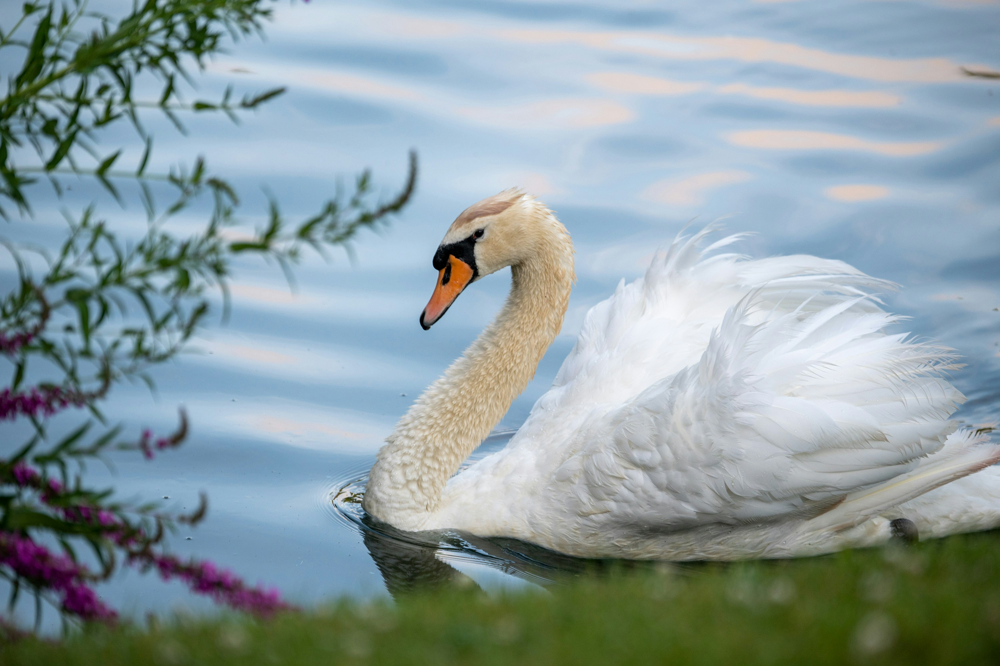

아기 오리는 살아났지만, 아이들이 자신과 놀려고 다가오자 겁에 질렸다. 자신을 해치려는 줄 알고 우유 통에 뛰어들어 우유를 쏟았고, 버터 통과 여물통까지 어지럽혔다. 부인은 비명을 질렀고 아이들은 아기 오리를 잡으려다 서로 넘어졌다. 다행히 문이 열려 있었기에 아기 오리는 밖으로 도망칠 수 있었다. 그는 새로 내린 눈 속에 몸을 웅크리고 잠자코 있었다.

그가 그 혹독한 겨울 동안 견뎌야 했던 고난과 비참함은 이루 다 말할 수 없을 정도였다. 그래도 아기 오리는 간신히 목숨을 부지했다. 마침내 따뜻한 태양이 다시 비치고 종달새가 지저귀기 시작했다. 아름다운 봄이 찾아온 것이다.
아기 오리는 날개를 들어 보았다. 전보다 훨씬 힘차게 공기를 갈랐고, 힘껏 날아오를 수 있었다. 한참을 날아간 끝에 사과나무 꽃이 활짝 핀 아름다운 정원에 도착했다. 시냇물 위로는 라일락 꽃이 드리워져 있었고, 모든 것이 싱그러운 봄의 빛으로 가득했다.
그때 덤불 속에서 아름다운 백조 세 마리가 나타났다. 아기 오리는 그들을 알아보았다. 예전에 하늘을 날아가던 바로 그 고귀한 새들이었다. 그는 백조들에게 다가가고 싶었지만, 자신이 얼마나 못생긴지 알고 있었다. 백조들 역시 자신을 싫어하고 쫓아낼 것이라고 생각했다.
그래도 이제는 더 이상 도망치고 싶지 않았다. 오리들에게 물리고, 암탉에게 쪼이고, 사람들에게 발로 차이며 살아가는 것보다는 차라리 백조들에게 죽는 편이 나을 것 같았다.